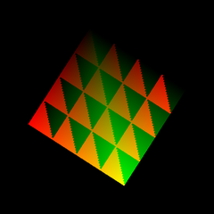
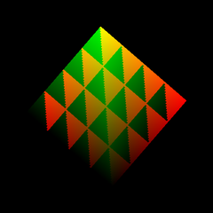
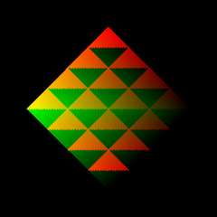
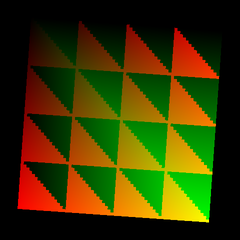

第 05 回
行列で回す
この回の目標
- C++ で作った行列(
MATRIX)をシェーダーに渡して、頂点を回せる。 - 拡大縮小・回転・移動を、行列の掛け算でまとめられることが分かる。
開くサンプル

samples/C3_SetVSConstFMtxTest
テンプレート: templates/05_matrix.dxtemplate
動かすと、板が画面の真ん中で回ります。

20 フレーム目50 フレーム目
80 フレーム目
110 フレーム目読むところ
src/main.cpp
C++struct VS_PARAM
{
FLOAT4 CenterPosition ; // 回転の中心
MATRIX RotateZMatrix ; // Z 軸まわりの回転の行列
} ;
C++mtx = MGetRotZ( angle ) ; // DxLib の関数で回転の行列を作る
vsparam->RotateZMatrix = mtx ; // そのまま定数バッファに入れる
shaders/SetVSConstFMtxTestVS.hlsl
HLSL(シェーダー)cbuffer SetVSConstFMtxTestParam : register( b4 )
{
float4 cfCenterPosition ;
row_major float4x4 cfRotateZMatrix ;
} ;
HLSL(シェーダー)lWorldPosition = mul( float4( VSInput.Position, 1.0f ), cfRotateZMatrix ) ; // 座標 × 行列
lWorldPosition += cfCenterPosition ; // 中心に動かす
- C++ の
MATRIXをそのまま入れたら、HLSL ではrow_majorを付けて、mul( 座標, 行列 )の順で掛ける。 DxLib のVTransform( 座標, 行列 )と同じ順番になります。row_majorを付けないと、行と列が入れ替わって(転置されて)読まれ、回る向きが逆になります(仕様書 7 章)。
- 回転は原点のまわりで起きるので、「回してから、中心に動かす」の順です。
行列をまとめる
MMult( A, B ) は「A をしてから B をする」行列を作ります。
C++MMult( MGetScale( VGet( 2, 2, 1 ) ), MGetRotZ( angle ) ) // 2 倍にしてから回す
順番を逆にすると結果が変わることがあります(回してから横に伸ばすと、ななめにゆがむ)。
VGet( 2, 2, 1 ))なら、どちらの順番でも同じです。課題
- ★5-1回転の中心を画面の左上寄りにする(C++ で渡す中心を変える)。
- ★★5-2回しながら大きさも変える。拡大縮小の行列(
MGetScale)と回転の行列をMMultで掛け合わせて渡す。大きさは1.0f + 0.5f * sinf( angle )など。 - ★★★5-3C++ で行列を作らず、シェーダーの中で角度から回す。角度だけを渡し、
x' = x * cos - y * sin、y' = x * sin + y * cosを書く。
解答例: 5-2 → answers/05_scale_rotate(【課題 5-2】 の所)
解答例を動かした画面
元のサンプル
answers/05_scale_rotate(大きさも変わる)